What the Major Arcana are
The 22 Major Arcana cards are the backbone of the tarot. They belong to no suit and no element — each one is an archetype, a major force or stage of human experience. Read together, they tell a single story often called the Fool’s Journey: a soul begins as the Fool, meets the challenges of the world, faces shadow and crisis, and arrives at wholeness as the World — only to step off the cliff again.
Whether you draw a single card or read the whole arc, the Major Arcana speak about the big turning points of a situation — beginnings, choices, crises, awakenings — rather than small daily details.
Why the cards can read your story
The Major Arcana were never built to predict. In a 1933 lecture, the psychologist Carl Jung described the cards as “psychological images, symbols with which one plays, as the unconscious seems to play with its contents”. For him, a person laying the cards was looking for “an access through the unconscious to the meaning of an actual condition” — because, he said, there is “a sort of correspondence or a likeness between the prevailing condition and the condition of the collective unconscious”. The images — the Hanged Man, the Tower, the Sun — are “sort of archetypal ideas”: patterns that have carried human stories for centuries.
“Until you make the unconscious conscious, it will direct your life and you will call it fate.”— Carl Jung
Jung used the cards not to foretell but to accelerate what he called individuation — the movement toward wholeness and integrity. When a story of your own doing is held up against the archetypes, what usually surfaces is not a prediction but a recognition: the pattern that was already moving inside what happened.
That is the premise behind the Story Reader: you bring a story, the cards interpret the action through the archetypes, and the reading stays with you as questions, not as a forecast.
The Jung–Tarot connection in video: Psikelogy — “Carl Jung and the Tarot: An Archetypal Journey”
Reading a single card
- Read the name and number. The Roman numeral is the card’s position on the journey; the name is the theme of the archetype.
- Look at the central figure. Who is it, what is it doing, which way is it facing? The figure is the “you” of the card — note its posture: moving, standing firm, falling, suspended.
- Inventory the symbols. Every card is built from a small set of symbols — the cliff, the scales, the tower. The Key Elements list on each card page is your quick reference for the image in front of you.
- Notice color and direction. Light versus dark, upward versus downward movement — these tilt the meaning toward energy and hope, or toward withdrawal and challenge.
- Name your first feeling. Before analyzing, ask: what is the overall mood of this image? Intuition is a reading tool, not a decoration.
- Map it to your question. Ask: “where is this force at work in my situation right now?” A card is a lens, not a fortune — it frames the situation; it does not predict it.
The journey in seven stages
The 22 cards in order form the map of the journey. Each stage groups cards that deal with the same inner work:
The Leap
A beginning. Innocence, a leap of faith, pure potential before the world gets hold of you.
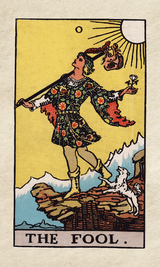
The FoolBuilding the Self
Will, inner knowing, nurturing, structure — the instruments you assemble to act in the world.
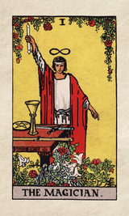
The Magician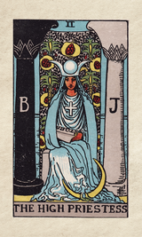
The High Priestess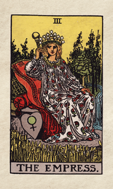
The Empress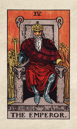
The EmperorYour Place in the World
Tradition, love and choice, and the drive to take charge and head for a goal.
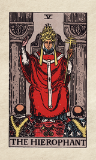
The Hierophant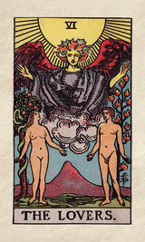
The Lovers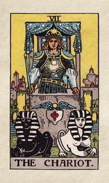
The ChariotInner Work & Cycles
Taming the instincts, stepping back for introspection, and learning to ride the turning wheel of fortune.
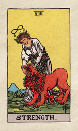
Strength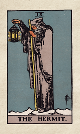
The Hermit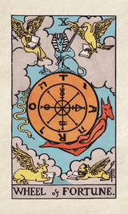
Wheel of FortuneReckoning & Release
Weighing the consequences, surrendering for a new perspective, and the ending that transforms.
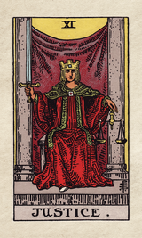
Justice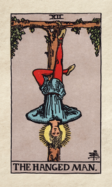
The Hanged Man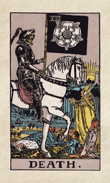
DeathIntegration & Crisis
Blending opposites, facing the shadow, and the sudden collapse that shatters what was false.
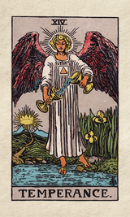
Temperance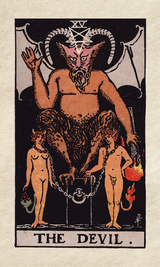
The Devil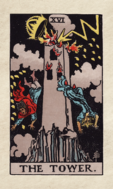
The TowerAwakening & Wholeness
Hope, the unconscious, vitality, the call to wake up — and the completed journey.
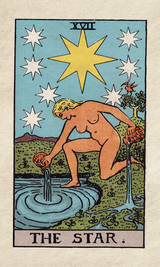
The Star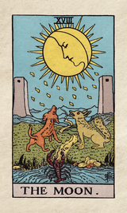
The Moon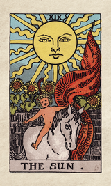
The Sun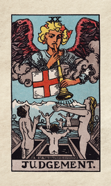
Judgment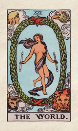
The WorldReading them in a spread
When cards are laid out together, position gives each card its role. In a three-card spread, the positions might be “situation / challenge / outcome” or “past / present / future”. A Major Arcana card in a position is a major, archetypal force at work in that part of your question — not a small daily detail.
Read the keywords of the position first, then let the card’s image fill them in. Two Major Arcana cards in one spread is a strong signal: the situation is being shaped by big themes, not circumstances.
Upright and reversed
The cards on this site are read upright. Many traditions also read cards that land upside down as a blocked or inward version of the theme — Strength reversed as strained endurance, the Tower reversed as a delayed collapse. Learn each theme upright first until it is solid, then experiment with reversed readings.
Tips for a better reading
- Ask one question at a time, and write it down before you touch the cards.
- Read in order — the arc is a story, and the sequence is part of the message.
- Use the journey as a map. Where on the path is this card? Early cards (Fool → Chariot) urge action; middle cards (Justice → Tower) ask for reckoning; late cards (Star → World) speak of recovery and completion.
- Remember it is a cycle. The World leads back to the Fool: a “final” card often marks the start of the next chapter.
- Stay consistent. Use one deck and one way of reading, so the meanings build on each other.